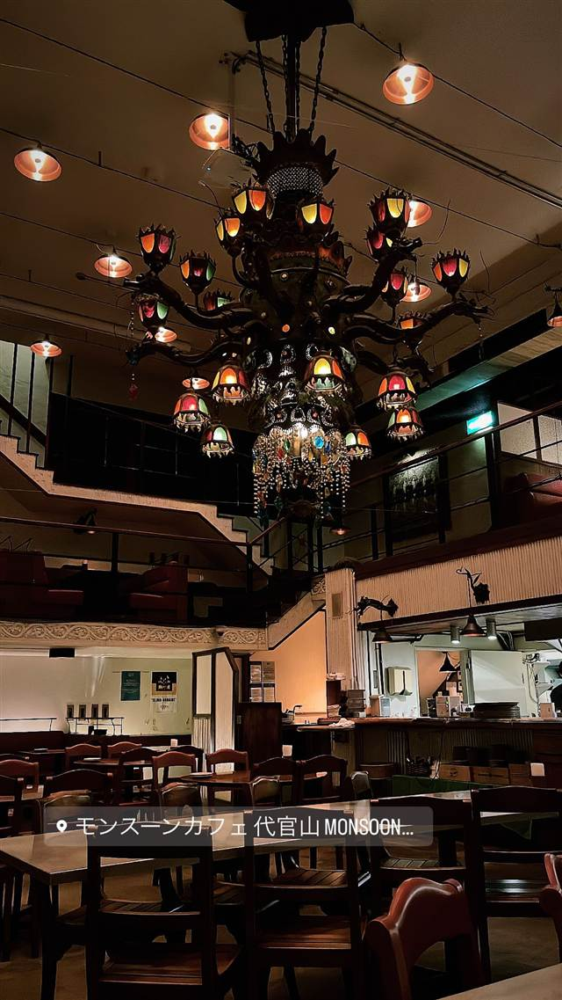

モンスーンカフェ 代官山（Monsoon Cafe）
シャンデリアとドラゴンの彫刻が並ぶ、現存最古の1995年開業店
モンスーンカフェ 代官山 MONSOON...
代官山の「モンスーンカフェ」は、グローバルダイニングが手がけるエスニックダイニングの代官山店として1995年に開業。大きなシャンデリアとドラゴンの彫刻が目を引くアトリウム空間で、タイ・ベトナムなど東南アジア各国の料理が楽しめる、現存するモンスーンカフェの中で最も歴史ある一軒。
TRIVIA
豆知識
- 西麻布1号店など初期の店舗はすでに閉店しており、代官山店が現存する中で最も歴史のある店舗
- 2025年に開業30周年を迎えた
REVIEWS
世間の評判
3.30食べログ
非日常感ある内装と活気ある接客
- テーマパークのような一軒家風の内装と吹き抜けの開放感を評価する声が多い
- パッタイやグリーンカレーなどタイ料理の味を評価する意見が目立つ
- 会計はキャッシュレス決済のみで現金が使えない点に戸惑う人もいる
食べログ 口コミ648件
| 創業 | 1995年開業 |
|---|---|
| 系譜 | 外食企業「グローバルダイニング」が展開するブランドの一つ。創業者・長谷川耕造氏は1976年の「六本木ゼスト」を皮切りに「カフェ ラ・ボエム」「権八」などエンターテインメントレストランを次々に手がけ、1997年に社名をグローバルダイニングへ変更 |
| 看板 | タイ・ベトナム・マレーシアなど東南アジア各国のエスニック料理 |
| こだわり | 厳選した旬の食材を使い、東南アジアのリゾートを思わせる高い天井のアトリウムと大きなシャンデリア・ドラゴンの彫刻が並ぶ空間で提供 |
| どこから | 都心 |
| 営業時間 | 月〜日 11:30-23:30 |
| 予算 | 夜 ¥3,000～¥3,999 |
| 場所 | 神泉 東京都渋谷区 |
| メモ | 代官山駅から徒歩10分、テラス席あり、3階はパーティーフロア |
食べたもの：店内シャンデリア
NEARBY
近い店・同じ系統の店
-
 イタリアン 代官山駅
リストランテASO
昭和初期の洋館で味わう、樹齢300年の欅を望むコース料理
夜 ¥20,000～¥29,999
イタリアン 代官山駅
リストランテASO
昭和初期の洋館で味わう、樹齢300年の欅を望むコース料理
夜 ¥20,000～¥29,999
-
 メキシコ 代官山駅
Hacienda del cielo MODERN MEXICANO
天井高8mの吹き抜けとテラスから東京タワーを望むモダンメキシカン
昼 ¥1,000～¥1,999 夜 ¥4,000～¥4,999
メキシコ 代官山駅
Hacienda del cielo MODERN MEXICANO
天井高8mの吹き抜けとテラスから東京タワーを望むモダンメキシカン
昼 ¥1,000～¥1,999 夜 ¥4,000～¥4,999
-
 メキシコ 代官山
ZEST CANTINA 代官山
恵比寿の大型店が10年越しに代官山で復活したテックスメックス
昼 ¥1,000～¥1,999 夜 ¥3,000～¥3,999
メキシコ 代官山
ZEST CANTINA 代官山
恵比寿の大型店が10年越しに代官山で復活したテックスメックス
昼 ¥1,000～¥1,999 夜 ¥3,000～¥3,999
-
 カフェ 中目黒
カフェ ファソン 中目黒本店（CAFÉ FAÇON）
コーヒーとの相性を考え抜いたバスクチーズケーキ
昼 ¥1,000～¥1,999 夜 ¥1,000～¥1,999
カフェ 中目黒
カフェ ファソン 中目黒本店（CAFÉ FAÇON）
コーヒーとの相性を考え抜いたバスクチーズケーキ
昼 ¥1,000～¥1,999 夜 ¥1,000～¥1,999
-
 ブランチ 代官山
IVY PLACE
本来は白い箱形の予定だった、別荘風の一軒家でパンケーキ
昼 ¥4,000～¥4,999 夜 ¥6,000～¥7,999
ブランチ 代官山
IVY PLACE
本来は白い箱形の予定だった、別荘風の一軒家でパンケーキ
昼 ¥4,000～¥4,999 夜 ¥6,000～¥7,999
-
 カフェ 二子玉川駅
カフェ リゼッタ 二子玉川店（Cafe Lisette）
食べログ「カフェ百名店」に2年連続選ばれたプリンアラモード
昼 ¥1,000～¥1,999 夜 ¥1,000～¥1,999
カフェ 二子玉川駅
カフェ リゼッタ 二子玉川店（Cafe Lisette）
食べログ「カフェ百名店」に2年連続選ばれたプリンアラモード
昼 ¥1,000～¥1,999 夜 ¥1,000～¥1,999